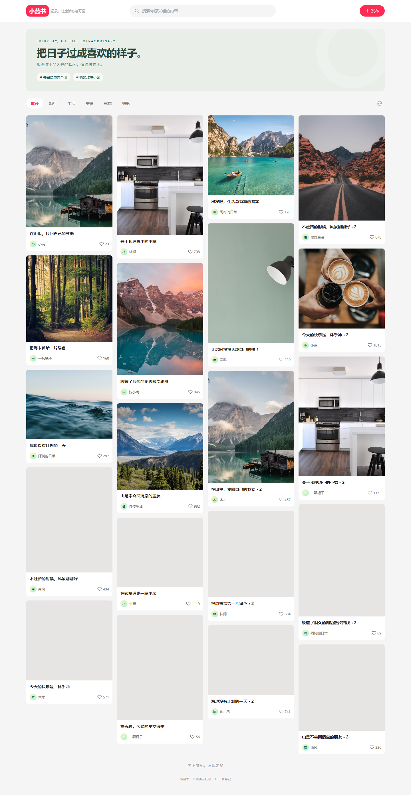

小蓝书 · React 瀑布流社区
本轮来源
用户指定 gpt-6.1-sol / max，明确允许当前会话。当前助手顺序执行，无子代理；模型名称来源为用户。完整用户要求与本题原文见 prompt.md。系统完整上下文、前序工具输出和历史缺失的材料未导出，输入标记 partial。
批次说明（文件未留存） · 校验记录（文件未留存） · 校验前首轮完整源码快照（文件未留存）
这是一次当前会话的实现记录，不能视作独立会话下的公平性能评测。没有人工修改，所有实现期修复由当前助手完成。
功能与结构
- CSS 多列瀑布流：移动端 2 列、平板 3 列、桌面 4 列；初始 20 条笔记，IntersectionObserver 分批追加。
- 搜索标题、作者与分类；分类、空结果、清空搜索和详情弹窗。
- Zustand 管理笔记与点赞；点赞存于浏览器，发布笔记只保留当前页面会话。
- 本地图片发布、读取错误、格式与 6 MB 限制；标题、正文与分类表单。
- react-lazyload 图片加载、失败时程序生成 SVG 占位；hover、按压、点赞动画与减少动态效果偏好。
- 页面顶部下拉刷新，桌面亦有刷新按钮。
- src/components 拆分卡片、图标与弹窗，src/mock.ts 保存 mock 数据。
运行
本目录执行：
npm ci
npm run dev
归档预览使用根目录的 previews/bluebook/gpt-6-1-sol-max-r01/index.html。重建在仓库根目录执行：
npm run build:demo -- bluebook--gpt-6-1-sol-max-r01
预览含完整构建资源；图片需要联网，不能将 TSX 源码入口当作静态 Pages 预览。
复盘
已检查初始数量、点赞持久化、空搜索、滚动追加、详情和本地发布，390px 无水平溢出。构建发现 react-lazyload 的 prop-types 依赖缺失，已显式登记；交互检查发现 effect 清理取消分页计时器，已修正并加入浏览器回归。图片容器增加高度约束，避免原图宽高比造成留白。服务数据、账户与真实发布不在本题范围，均使用本地 mock。
预览截图

由本 run 登记的最终预览入口在 Chromium 1440 × 1050 桌面视口生成完整页面截图，采用默认初始演示状态。 <!-- archive:start -->
当前归档信息（自动生成）
- 实验 ID：
bluebook--gpt-6-1-sol-max-r01 - 模型：GPT-6.1 Sol；推理档位：max
- 类型：app；预览：build；网络：required
- 完整原始输入快照 · 主题与其他版本
- 输入记录：保存用户原始要求及基线任务正文；当前会话顺序执行。完整系统上下文与前序工具输出未导出，参见 docs/experiments/gpt-6-1-sol-max。
- 工具：Codex。用户指定 gpt-6.1-sol / max；当前会话直接执行，无子代理。Windows，Node 22.16.0，npm 10.9.2；日期按用户环境上下文。
- 运行方式：在本目录 npm ci 后 npm run dev；Pages 使用根目录 previews 中已提交的构建产物。
- 费用记录：OpenAI · ChatGPT Plus 订阅；单案例货币金额未记录。据用户说明，OpenAI 模型通过 ChatGPT Plus 订阅测试；全部案例完成后，五小时额度未耗尽。未提供单案例费用金额。
- 主页面
部署适配记录
- 2026-09-30：从空白基线首次实现；按主题最新提示词执行，未获取历史实现。
- 2026-09-30：显式补齐 react-lazyload 的 prop-types 运行依赖；修复分页 effect 清理提前取消计时器、卡片图片留白。 <!-- archive:end -->